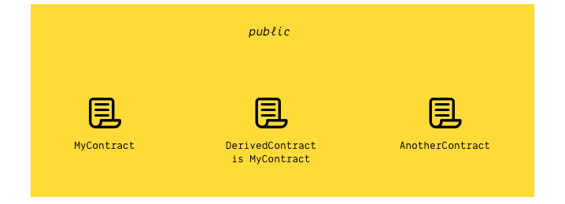

<!doctype html>
<html lang="en">
  <head>
    <meta charset="utf-8">

    <title>Smart Contracts And Decentralized Applications</title>

    <meta name="author" content="Dhruvin Parikh">

    <meta name="apple-mobile-web-app-capable" content="yes" />
    <meta name="apple-mobile-web-app-status-bar-style" content="black-translucent" />

    <meta name="viewport" content="width=device-width, initial-scale=1.0, maximum-scale=1.0, user-scalable=no">

    <link rel="stylesheet" href="../../reveal.js/css/reveal.css">
    <link rel="stylesheet" href="../../reveal.js/css/theme/black.css" id="theme">

    <!-- Code syntax highlighting -->
    <link rel="stylesheet" href="../../reveal.js/lib/css/zenburn.css">

    <!-- Printing and PDF exports -->
    <script>
      var link = document.createElement( 'link' );
      link.rel = 'stylesheet';
      link.type = 'text/css';
      link.href = window.location.search.match( /print-pdf/gi ) ? '../../reveal.js/css/print/pdf.css' : '../../reveal.js/css/print/paper.css';
      document.getElementsByTagName( 'head' )[0].appendChild( link );
    </script>

    <!--[if lt IE 9]>
    <script src="../reveal.js/lib/js/html5shiv.js"></script>
    <![endif]-->

    <style>
      .reveal .slides h1, .reveal .slides h2, .reveal .slides h3 {
        text-transform: none;
      }

      .two-column {
        display: flex;
        flex-wrap: wrap;
      }

      .two-column em {
        margin: 20px;
      }

      .reveal .big-and-bold {
        font-weight: bold;
        font-size: 135%;
      }

      .reveal .shrunk-a-bit {
        font-size: 90%;
      }

      .reveal .shrunk-a-bit pre {
        width: 100%;
      }

      .reveal pre {
        width: 100%;
      }

      .reveal .highlight {
        color: yellow;
        font-weight: bold;
      }

      .reveal .highlightRed {
        color: red;
        font-weight: bold;
      }
    </style>
  </head>

  <body>
    <div class="reveal">
      <div class="slides">

<!------------------------------------------------------->


<section data-markdown><script type="text/template">

## CSBC 2010 - Smart Contracts And Decentralized Applications

### Class 3: Solidity In-Depth - II

*Dhruvin Parikh*

</script></section>

<section data-markdown><script type="text/template">

## Class Plan
* Solidity Smart Contracts
    * Modifiers in solidity
    * Smart contract ownership 
    * Solidity time units
    * Function state mutability (Read-only)
    * Ensuring key uniqueness
</script></section>


<section data-markdown><script type="text/template">

## Who can call smart contract function?
        

1. The main contract itself <span class="highlight">(MyContract)</span>
2. A contract derived (i.e. inheriting) from the main contract <span class="highlight">(DerivedContract)</span>
3. A third party <span class="highlight">(AnotherContract)</span>
        
</script></section>


<section data-markdown><script type="text/template">

## Function visibility review

```
contract MyContract {
    function myFunction () [visibility-here] {
        // do something
    }
}
```
* Access restrictions control who can call them:
    * public, private, external, internal
    * Access restrictions are mandatory as of <a href="https://docs.soliditylang.org/en/v0.5.0/050-breaking-changes.html#explicitness-requirements" target="_blank">v0.5.0</a>
* Storage restrictions control what the function can do:
    * pure, view, (none)
</script></section>


<section data-markdown><script type="text/template">

## `private` function
    


* Can only be called by the `MyContract` itself. 
* Keep functions `private` unless a scope with more visibility is needed.
                
</script></section>


<section data-markdown><script type="text/template">

## `internal` function
        

    
* Can be called by the `MyContract` + derived contracts.

</script></section>


<section data-markdown><script type="text/template">

## `external` function
            

         
* It cannot be called from the MyContract + derived contracts; only by third party
* More performant as thier arguments do not need to be copied to memory.
         
</script></section>


<section data-markdown><script type="text/template">

## `public` function
                    

                 
* Can be called from all potential parties.
                 
</script></section>


<section data-markdown><script type="text/template">

## `view` and `pure` functions
                        
* Getter functions can be declared `view` or `pure`.
* View function declares that no state will be changed.
* Pure function declares that no state variable will be changed or read.
                     
</script></section>
        
<section data-markdown><script type="text/template">    

## Storage
    
```
contract SimpleCounter {
    uint256 public counter = 0;
    
    function increment() public {
        counter = counter + 1;
    }
}
```
    
* This contract has a single storage value: `counter`
* Every time `increment()` is called, goes up by 1
    * Should we worry about overflow?
* <span class="highlight">The counter is `public` so it automatically creates a getter function named `counter()`</span>
    
</script></section>
    
    
    
<section data-markdown><script type="text/template">
    
## Storage privacy
    
* Storage members can also be marked `private` or `internal`
* All this does is stop public accessor functions from being created
* **IT DOES NOT HIDE THE VALUES FROM AN ATTACKER**
    * Hiding is impossible because every node must know these values for consensus to work
    
</script></section>
    
    
    
<section data-markdown><script type="text/template">
    
## Atomic transactions
    
```
contract SimpleCounter {
    uint256 public counter = 0;
    
    function add(uint256 a) public {
        uint256 oldCounter = counter;
        counter += a;
        require(counter > oldCounter, "overflow!");
    }
}
```
    
* Notice we are checking for overflow *after* we have modified storage
* When `require` or `assert` trigger a failure, all storage changes are "rolled back" (put back to how they were before)
    
</script></section>

<section data-markdown><script type="text/template">

## Special variables
    
* There are <a href="https://solidity.readthedocs.io/en/develop/units-and-global-variables.html#special-variables-and-functions" target="_blank">Special variables</a> available, including:
    * `msg.sender` - The address of who called your function (usually who created the transaction)
    * `msg.value` - Amount of wei sent
    * `block.timestamp` - The current time
    * `block.number` - The current block height
</script></section>


<section data-markdown><script type="text/template">

## Access control: msg.sender
     
<pre class="hljs js">
contract MyContract {
    uint256 public myPersonalNumber = 0;
    
    function changePersonalNumber(uint256 newNum) public {
        <span class="highlight">require(msg.sender == 0x1234..., "only I can change this");</span>
        setPersonalNumber(newNum);
    }
    
    function setPersonalNumber(uint256 newNum) public {
        myPersonalNumber = newNum;
    }
}
</pre>
    
</script></section>


<section data-markdown><script type="text/template">

## Oops...
    
<pre class="hljs js">
contract MyContract {
    uint256 public myPersonalNumber = 0;
    
    function changePersonalNumber(uint256 newNum) public {
        require(msg.sender == 0x1234..., "only I can change this");
        setPersonalNumber(newNum);
    }
    
    function setPersonalNumber(uint256 newNum) <span class="highlightRed">public</span> {
        myPersonalNumber = newNum;
    }
}
</pre>
    
* Make sure functions are marked `private`!
* Don't laugh: A contract with this bug [got hacked and lost $30M](https://blog.zeppelin.solutions/on-the-parity-wallet-multisig-hack-405a8c12e8f7)
    
</script></section>
 

<section data-markdown><script type="text/template">

## Custom modifiers
    
<pre class="hljs js">
    <span class="highlight">modifier onlyOwner() {
        require(msg.sender == owner);
        _;
    }</span>
    
    function doStuff() public <span class="highlight">onlyOwner</span> {
        // do owner stuff
    }
</pre>
    
* Wraps a function with some custom code
* The `_;` is replaced with the function body (in this case, `doStuff`'s body)
    
</script></section>


<section data-markdown><script type="text/template">

## Access control mechanism 
        
* Review OpenZeppelin's <a href="https://github.com/OpenZeppelin/openzeppelin-contracts/blob/master/contracts/access/Ownable.sol" target="_blank">Ownable.sol</a>
* Re-implement `SimpleStorage.sol` and `Token.sol` using Ownable.
        
</script></section>


<section data-markdown><script type="text/template">

## Time units 
            
* `1 == 1 seconds`
* `1 minutes == 60 seconds`
* `1 hours == 60 minutes`
* `1 days == 24 hours`
* `1 weeks == 7 days`
            
</script></section>

<section data-markdown><script type="text/template">

## A contract that remembers at what time it was created

```
contract Time {
    uint256 public createTime;

    constructor () public {
        createTime = block.timestamp;
    }
}
```

* EVM represents time as the (integer) number of seconds since the <a href="https://en.wikipedia.org/wiki/Unix_time" target="_blank">“Unix epoch”</a>.
* Use `block.timestamp` to access current time.
* Tweak the `SimpleToken` contract to capture time of latest transfer

</script></section>


<section data-markdown><script type="text/template">

## `FavouriteNumber.sol`

```
// SPDX-License-Identifier: MIT

pragma solidity ^0.6.10;

// ABIEncoderV2 for encoding nesting array and structs
pragma experimental ABIEncoderV2;

contract FavouriteNumber {
    struct Person {
        string name;
        uint age;
        uint number;
    }
 
    mapping(address => Person) favouriteNumber;
 
    function setMyFavouriteNumber(Person memory p) public {
        favouriteNumber[msg.sender] = p; 
    }
 
    function getMyFavouriteNumber() public view returns(uint) {
    return favouriteNumber[msg.sender].number;
    }
}
```

* Restrict the person to modify the details more than once.
</script></section>


<section data-markdown><script type="text/template">

## End of Class

</script></section>


<!------------------------------------------------------->


      </div>

    </div>

    <script src="../../reveal.js/lib/js/head.min.js"></script>
    <script src="../../reveal.js/js/reveal.js"></script>
    <script src="../../reveal.js/plugin/zoom-js/zoom.js"></script>

    <script>

      // Full list of configuration options available at:
      // https://github.com/hakimel/reveal.js#configuration
      Reveal.initialize({
        controls: true,
        progress: true,
        history: true,
        center: true,

        transition: 'none', // none/fade/slide/convex/concave/zoom

	math: {
          mathjax: '../lib/MathJax/MathJax.js',
          config: 'TeX-AMS_SVG-full',
	},

        // Optional reveal.js plugins
        dependencies: [
          { src: '../../reveal.js/plugin/markdown/marked.js', condition: function() { return !!document.querySelector( '[data-markdown]' ); } },
          { src: '../../reveal.js/plugin/markdown/markdown.js', condition: function() { return !!document.querySelector( '[data-markdown]' ); } },
          { src: '../../reveal.js/plugin/highlight/highlight.js', async: true, callback: function() { hljs.initHighlightingOnLoad(); } },
          { src: '../../reveal.js/plugin/math/math.js', async: true }
        ]
      });

    </script>

  </body>
</html>